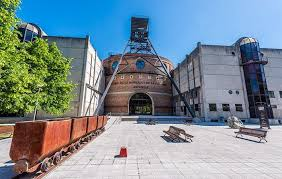
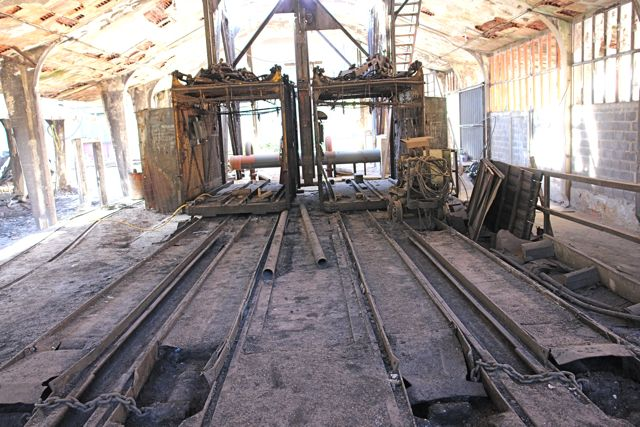
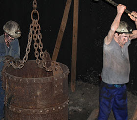
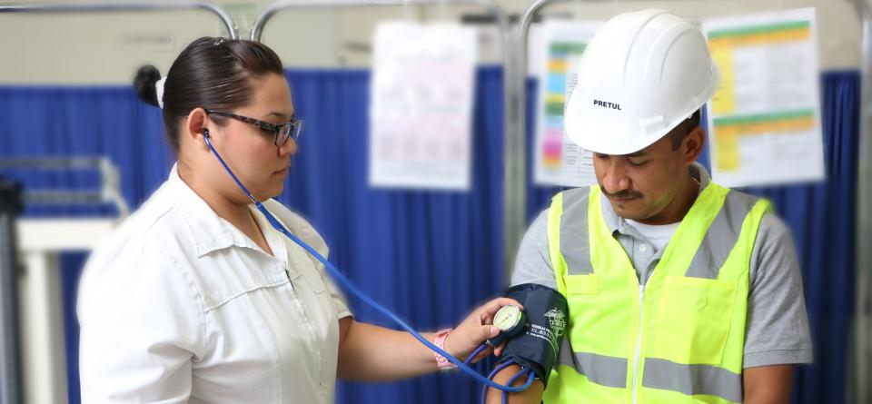

El museo más visitado de Asturias. Dos siglos de historia minera e industrial, ahora también con recreaciones en vídeo generado por inteligencia artificial.
Recreaciones audiovisuales de cómo trabajaban los mineros asturianos, producidas con IA generativa a partir de documentación histórica y testimonios orales.

Recreación de una jornada en el Pozo San Vicente a principios del siglo XX, generada con IA a partir de documentación histórica.

El sistema de transporte vertical que conectaba los niveles inferiores con la superficie.

Evolución de las técnicas de extracción desde el pico manual hasta los explosivos industriales.

Los espacios sociales del complejo minero: aseos, enfermería y economato.
Más de 60.000 piezas distribuidas en espacios temáticos que narran la historia extractiva e industrial del Principado de Asturias.
Una de las colecciones más completas de Europa. Desde las primeras lámparas de aceite hasta las modernas de batería.
Ver colección →Máquinas de vapor, compresores, locomotoras y todo el utillaje que hizo posible la minería industrial en las cuencas del Nalón y el Caudal.
Ver colección →Hulla, antracita, hierro, cinc y plomo. La variedad mineralógica del subsuelo asturiano, explicada geológicamente.
Ver colección →Casa-aseo, enfermería, casa del médico, economato. La vida social del minero asturiano en el siglo XX.
Ver colección →Fondos documentales únicos: planos de pozos, registros de producción, fotografías históricas y publicaciones sindicales.
Ver colección →El MUMI como hito del turismo industrial asturiano. Conexión con el Pozo Sotón, el MUSI y las rutas de los valles mineros.
Ver colección →La visita más impactante del MUMI. Un recorrido a escala real por el interior de una explotación minera, con utillaje original y una reproducción fiel del trabajo bajo tierra.